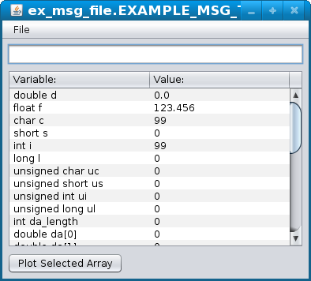

Data logging and playback are very important during the development of intelligent systems especially in unstructured environments where simulation of sufficient accuracy is impractical. Ideally the logged data can be used to present a number of potential candidate algorithms the exact environment that it would have experienced had it been run when the data was collected. If the application gets all of itst inputs though NML this can be accomplished by writing the logged data back to the NML channels it was recorded from during data collection. For systems with a few scalar variables developers often wrote custom data logging code that would save the files in a text, CSV or XML file. Corresponding custom code to parse the files for playback also needed to be written. The advantage of these formats are that the data files are somewhat self documenting, can be read back on any platfrom rather than just the platfrom they are written from, and can be imported into various analysis or display tools. However when the data frames get larger the overhead of converting the data to ascii becomes more prohibitive. For some formats like CSV the self-documenting nature disappears since a text file with a list of 10 variables might have meaning but a list of 10,000 probably requires a more application specific display. There may also be a tendancy not to add all variables to the log file, which means default values have to be assumed during playback and performance during playback becomes more likely to be different than performance in the real world. Another approach is to simply write the binary data structure as stored in the programs memory out to disk. This is very simple and efficient, however the data can only be read back in reliably on the platform and in the same programming language as it was written with. If additional documentation is not kept with the data it may be impossible understand the format later. The approach here is to combine these using the data mashalling built into NML so that one could write the data with the simplicity and efficiency of dumping binary with the portability and openness of the text formats.
I like lots of examples.
Commands users are expected to enter at a command prompt will look like this.
Computer program generated example output will look like this.
Text files listed in line look like this.
All of the example files referred to are in rcslib_doc_examples.zip.
From the header file "nml.hh":
// ...
class NML
{
// ...
/*
Get a multi-line string that describes the offset to each variable
of the given message type and encoding method
as well as other properties such as its type, whether it is an array or
dynamic length array. The first line is a header line and then one line
for each variable with comma seperated fields.
The buffer the string is written to may be overwritten by subsequent
operations on this NML object and will be freed when this
NML object is deleted.
*/
const char *getEncodedMessageMemoryMap(NMLmsg *nml_msgP,
const int encoding_method);
/*
Writes the string that would have been obtained with
getEncodedMessageMemoryMap to the file filename.
*/
void writeEncodedMessageMemoryMapToFile(NMLmsg *nml_msgP,
const int encoding_method,
const char *filename);
/*
Get a multi-line string that describes the offset to each variable
of the given message type as stored in memory on this platform
as well as other properties such as its type, whether it is an array or
dynamic length array. The first line is a header line and then one line
for each variable with comma seperated fields.
The buffer the string is written to may be overwritten by subsequent
operations on this NML object and will be freed when this
NML object is deleted.
*/
const char *getRawMessageMemoryMap(NMLmsg *nml_msgP);
/*
Writes the string that would have been obtained with
getRawMessageMemoryMap to the file filename.
*/
void writeRawMessageMemoryMapToFile(NMLmsg *nml_msgP,
const char *filename);
/*
Run the given nml_msg through the NML data marshalling using the given
encoding_method but do not send it anywhere.
The encoded version of the data will be pointed to by encoded_data pointer
and the size stored in encoded_size. The buffer encoded_data points to may
be overwritten by subsequent operations on this NML object. The buffer will
be freed when this NML object is deleted.
*/
void msg_to_encoded_data(NMLmsg *nml_msg,
void *&encoded_data,
long &encoded_size,
const int _encoding_method);
/*
Read a message file and pass the contents through
the NML data marshalling using the given
encoding_method.
Return a pointer to the decoded message that can then be cast to
a message pointer of the appropriate type.
The buffer storing the message returned to may
be overwritten by subsequent operations on this NML object. The buffer will
be freed when this NML object is deleted.
*/
NMLmsg *read_encoded_data_from_file (const char *filename,
const int _encoding_method);
/*
Run the given nml_msg through the NML data marshalling using the given
encoding_method and write the resulting encoded data to the file filaname.
*/
void write_encoded_data_to_file(NMLmsg *nml_msg,
const int _encoding_method,
const char *filename);
/*
Pass the provided encoded_data through
the NML data marshalling using the given
encoding_method.
Return a pointer to the decoded message that can then be cast to
a message pointer of the appropriate type.
The buffer storing the message returned to may
be overwritten by subsequent operations on this NML object. The buffer will
be freed when this NML object is deleted.
*/
NMLmsg * encoded_data_to_msg(
void *encoded_data,
long encoded_size,
const int _encoding_method);
// ...
};
// ...
The encoding methods are listed in "cms_types.hh:
// ...
enum CMS_NEUTRAL_ENCODING_METHOD
{
CMS_NO_ENCODING,
CMS_XDR_ENCODING,
CMS_ASCII_ENCODING,
CMS_DISPLAY_ASCII_ENCODING,
CMS_XML_ENCODING,
CMS_PACKED_ENCODING,
CMS_PACKEDL64_ENCODING
};
// ...
The following provides an extremely simple data logger using the API. (Extending the example from NMLcpp.html)
#include "nml_ex1.hh" int main() { NML nml(ex_format,"ex_buf1","simple_data_logger","ex_cfg.nml"); nml.read(); nml.write_encoded_data_to_file(nml.get_address(), CMS_PACKED_ENCODING, "ex_msg_file.EXAMPLE_MSG_TYPE"); }
Compile and run with:*
## Set RCS lib install directory.
## likely needs to adjusted for your system.
RCSLIB_DIR=~/rcslib/;
## Set the path for finding librcs.so
LD_LIBRARY_PATH="${RCSLIB_DIR}/lib/:${LD_LIBRARY_PATH}";
export LD_LIBRARY_PATH;
## Create nml_ex1.cc from nml_ex1.hh
java -jar "${RCSLIB_DIR}"/bin/CodeGenCmdLine.jar nml_ex1.hh -o nml_ex1.cc
## Compile examples:
g++ nml_ex9.cc nml_ex1.cc -I"${RCSLIB_DIR}"/include -L "${RCSLIB_DIR}"/lib -lrcs -o nml_ex9
g++ nml_ex4.cc nml_ex1.cc -I"${RCSLIB_DIR}"/include -L "${RCSLIB_DIR}"/lib -lrcs -o nml_ex4
g++ nml_ex3.cc nml_ex1.cc -I"${RCSLIB_DIR}"/include -L "${RCSLIB_DIR}"/lib -lrcs -o nml_ex3
g++ simple_data_logger.cc nml_ex1.cc -I "${RCSLIB_DIR}"/include -L "${RCSLIB_DIR}"/lib -lrcs -o simple_data_logger
## NML server
./nml_ex9 &
## write something into the buffer.
./nml_ex4;
## Log the data from the nml buffer to a file.
./simple_data_logger ;
## Kill the previously spawned server
killall -INT nml_ex9
This should create a file named "ex_msg_file.EXAMPLE_MSG_TYPE".
The following provides a very simple program to playback the data recorded with the previous example: simple_data_playback.cc
#include "nml_ex1.hh" int main() { NML nml(ex_format,"ex_buf1","simple_data_playback","ex_cfg.nml"); nml.write(nml.read_encoded_data_from_file("ex_msg_file.EXAMPLE_MSG_TYPE", CMS_PACKED_ENCODING)); }
It could be run with something like the following:*
## Set RCS lib install directory.
## likely needs to adjusted for your system.
RCSLIB_DIR=~/rcslib/;
## Set the path for finding librcs.so
LD_LIBRARY_PATH="${RCSLIB_DIR}/lib/:${LD_LIBRARY_PATH}";
export LD_LIBRARY_PATH;
## Create nml_ex1.cc from nml_ex1.hh
java -jar "${RCSLIB_DIR}"/bin/CodeGenCmdLine.jar nml_ex1.hh -o nml_ex1.cc
## Compile examples:
g++ nml_ex9.cc nml_ex1.cc -I"${RCSLIB_DIR}"/include -L "${RCSLIB_DIR}"/lib -lrcs -o nml_ex9
g++ nml_ex4.cc nml_ex1.cc -I"${RCSLIB_DIR}"/include -L "${RCSLIB_DIR}"/lib -lrcs -o nml_ex4
g++ nml_ex3.cc nml_ex1.cc -I"${RCSLIB_DIR}"/include -L "${RCSLIB_DIR}"/lib -lrcs -o nml_ex3
g++ simple_data_playback.cc nml_ex1.cc -I "${RCSLIB_DIR}"/include -L "${RCSLIB_DIR}"/lib -lrcs -o simple_data_playback
## NML server
./nml_ex9 &
## Write the file "ex_msg_file.EXAMPLE_MSG_TYPE" back to the NML buffer.
./simple_data_playback ;
## Read the NML buffer and do something with it.
./nml_ex3;
## Kill the previously spawned server
killall -INT nml_ex9
Running nml_ex3 should produce:
We have a new example message. The value of its members are: f=123.456001, c=c, i=99
The point of this somewhat silly exercize is that now we can produce as many versions of nml_ex3 as we want and test them against the same data produced on the real system. The tests can be performed on pretty much any computer without the risks or hassles of running on the real system, and without the development costs of creating a simulator. When the ideal nml_ex3 is finally found it should be ready to be compiled to run on the real system without modification. Of course a more complicated logger and playback system would probably log and playback a series of messages rather than just one but that is easily enough added with a simple while loop.
There are several options for examining the logged data. Using the playback program as in the previous example is one. Another is to write a custom viewer such as the following examine_logged_data.cc:
#include "nml_ex1.hh" int main(int argc, const char **argv) { if(argc < 2) { rcs_print_error("Need filename argument.\n"); rcs_exit(1); } NML nml(ex_format, 0,0,0); EXAMPLE_MSG *example_msg_ptr = ( EXAMPLE_MSG *) nml.read_encoded_data_from_file(argv[1], CMS_PACKED_ENCODING); rcs_print(" %s:. \n"); rcs_print(" The value of its members are:\n "); rcs_print(" f=%f, c=%c, i=%d\n ", example_msg_ptr->f, example_msg_ptr->c, example_msg_ptr->i); }
Compile and run with:*
## Set RCS lib install directory.
## likely needs to adjusted for your system.
RCSLIB_DIR=~/rcslib/;
## Set the path for finding librcs.so
LD_LIBRARY_PATH="${RCSLIB_DIR}/lib/:${LD_LIBRARY_PATH}";
export LD_LIBRARY_PATH;
## Create nml_ex1.cc from nml_ex1.hh
java -jar "${RCSLIB_DIR}"/bin/CodeGenCmdLine.jar nml_ex1.hh -o nml_ex1.cc
## Compile examples:
g++ examine_logged_data.cc nml_ex1.cc -I"${RCSLIB_DIR}"/include -L "${RCSLIB_DIR}"/lib -lrcs -o examine_logged_data
## Display the logged data.
./examine_logged_data ex_msg_file.EXAMPLE_MSG_TYPE
.. should produce:
ex_msg_file.EXAMPLE_MSG_TYPE:. The value of its members are: f=123.456001, c=c, i=99
The most interesting thing about the example is that it passes 0,0,0 as the last three arguments to the NML constructror. This means there is no need for an NML config file or server and no shared memory segments or sockets used. The NML channel is being used only to read the file. Of course this viewer was hardly worth the trouble since it just prints some variable values out that could easily be obtained with either of the next two methods without writing any code.
To tell the diagnostics tool display a message file at startup:
## Set RCS lib install directory.
## likely needs to adjusted for your system.
RCSLIB_DIR=~/rcslib/;
java -jar "${RCSLIB_DIR}"/bin/diag_NB.jar input_headers=nml_ex1.hh message_files=ex_msg_file.EXAMPLE_MSG_TYPE
The message_files and input_headers can both be set to a list of files. The files should be seperated with ':' on Unix/Linux and with ';' on MS Windows. The message_files lists the files to display while the input headers is the list of C++ header files which define those messages.

The memory map file provides the information needed to determine the position of each variable in the file. The first character in the file is either 'L' (0x4c) to indicate the file is little-endian or 'B' (0x42) to indicate the file is big-endian. It can be read with a text-editor or opened with a spread sheet program. To generate the file write a program such as this "write_mem_map.cc"which really only needs to be run once.
#include "nml_ex1.hh" int main(int argc, const char **argv) { NML nml(ex_format, 0,0,0); EXAMPLE_MSG example_msg; nml.writeEncodedMessageMemoryMapToFile(&example_msg, CMS_PACKED_ENCODING, "EXAMPLE_MSG_TYPE_map.csv"); }
To compile and run:
## Set RCS lib install directory.
## likely needs to adjusted for your system.
RCSLIB_DIR=~/rcslib/;
## Set the path for finding librcs.so
LD_LIBRARY_PATH="${RCSLIB_DIR}/lib/:${LD_LIBRARY_PATH}";
export LD_LIBRARY_PATH;
## Create nml_ex1.cc from nml_ex1.hh
java -jar "${RCSLIB_DIR}"/bin/CodeGenCmdLine.jar nml_ex1.hh -o nml_ex1.cc
## Compile examples:
g++ write_mem_map.cc nml_ex1.cc -I"${RCSLIB_DIR}"/include -L "${RCSLIB_DIR}"/lib -lrcs -o write_mem_map
./write_mem_map
This produces the following file "EXAMPLE_MSG_TYPE_map.csv":
| type | name | size | offset | elsize | arraylen | offset_from | dla_maxlen | comment |
|---|---|---|---|---|---|---|---|---|
| long, | type, | 4, | 1, | 4, | 0, | , | 0, | , |
| long, | size, | 4, | 5, | 4, | 0, | , | 0, | , |
| double, | d, | 8, | 9, | 8, | 0, | , | 0, | , |
| float, | f, | 4, | 17, | 4, | 0, | , | 0, | , |
| char, | c, | 1, | 21, | 1, | 0, | , | 0, | , |
| short, | s, | 2, | 22, | 2, | 0, | , | 0, | , |
| int, | i, | 4, | 24, | 4, | 0, | , | 0, | , |
| long, | l, | 4, | 28, | 4, | 0, | , | 0, | , |
| uchar, | uc, | 1, | 32, | 1, | 0, | , | 0, | , |
| ushort, | us, | 2, | 33, | 2, | 0, | , | 0, | , |
| uint, | ui, | 4, | 35, | 4, | 0, | , | 0, | , |
| ulong, | ul, | 4, | 39, | 4, | 0, | , | 0, | , |
| int, | da_length, | 4, | 43, | 4, | 0, | , | 0, | #dynamic_length, |
| double_array, | da, | 8, | 47, | 0, | 20, | , | 20, | #dynamic_length_array, |
The first field is the C type of each variable. The second field is the name of the variable. The next field is the size of the variable. For static arrays this will be the size of the entire array for dynamic length arrays it is the size of only the first element. The offset is either an offset from the begininning or the file (in which case the offset from field will be blank) or the offset to the end of the last dynamic length array (in which case the offset from field will list this variable). For static arrays the next field lists the size of one element in the array. If there are no dynamic length arrays in the message or only one at the end the next field is blank indicating that the offsets are from the beginning of the file. Dynamic length arrays that have a maximum length list the value in the next field. Finally a comment field indicates the beginning and end of dynamic length arrays.
The program nml_packed_file_to_csv can be used to display the values of each variable and also computes the final offsets given the current lengths of any dynamic length arrays.
## Set RCS lib install directory.
## likely needs to adjusted for your system.
RCSLIB_DIR=~/rcslib/;
## Set the path for finding librcs.so
LD_LIBRARY_PATH="${RCSLIB_DIR}/lib/:${LD_LIBRARY_PATH}";
export LD_LIBRARY_PATH;
"${RCSLIB_DIR}/bin/nml_packed_file_to_csv" EXAMPLE_MSG_TYPE_map.csv ex_msg_file.EXAMPLE_MSG_TYPE
produces:
running_on_big_endian = 0 file_is_big_endian = 0 swap_byte_order=0 0x0001, long, type, 101 0x0005, long, size, 208 0x0009, double, d, 0.000000 0x0011, float, f, 1.234560e+02 0x0015, char, c, c (99,0x63) 0x0016, short, s, 0 0x0018, int, i, 99 0x001C, long, l, 0 0x0021, ushort, us, 0 0x0023, uint, ui, 0 0x0027, ulong, ul, 0 0x002B, int, da_length, 0
Often after data has been collected a decision is made to change the format of the message that was stored. The data collected in the old format represents a substantial data collection and testing effort. To use the old data with new programs it needs to be updated. Converting to XML and back is one way of accomplishing that. In nml_ex1_v2.hh the EXAMPLE_MSG class was modified to remove the first variable d and add an additional variable name at the end and thus changing the offset to every variable.
ex_packed_to_xml.cc includes and links with the old header and format function to convert the packed file to xml.
#include "nml_ex1.hh" int main(int argc, const char **argv) { if(argc != 3) { rcs_print_error("run with packed_file xml_file\n"); rcs_exit(1); } NML nml(ex_format,0,0,0); nml.write_encoded_data_to_file( nml.read_encoded_data_from_file(argv[1],CMS_PACKED_ENCODING), CMS_XML_ENCODING, argv[2]); }
ex_v2_xml_to_packed.cc includes the new header and links with the new format function to convert the XML back to the packed format.
#include "nml_ex1_v2.hh" int main(int argc, const char **argv) { if(argc != 3) { rcs_print_error("run with xml_file packed_file\n"); rcs_exit(1); } NML nml(ex_format,0,0,0); nml.write_encoded_data_to_file( nml.read_encoded_data_from_file(argv[1], CMS_XML_ENCODING), CMS_PACKED_ENCODING, argv[2]); }
Compile and perform the conversion using the following:*
## Set RCS lib install directory.
## likely needs to adjusted for your system.
RCSLIB_DIR=~/rcslib/;
## Set the path for finding librcs.so
LD_LIBRARY_PATH="${RCSLIB_DIR}/lib/:${LD_LIBRARY_PATH}";
export LD_LIBRARY_PATH;
## Generate nml_ex1.cc and nml_ex1_v2.cc
## Note the addition of generate_symbol_lookups=true which is needed anytime you
## use XML related functions.
java -jar "${RCSLIB_DIR}"/bin/CodeGenCmdLine.jar generate_symbol_lookups=true nml_ex1.hh -o nml_ex1.cc
java -jar "${RCSLIB_DIR}"/bin/CodeGenCmdLine.jar generate_symbol_lookups=true nml_ex1_v2.hh -o nml_ex1_v2.cc
## Complile the examples.
g++ ex_packed_to_xml.cc nml_ex1.cc -I"${RCSLIB_DIR}"/include -L "${RCSLIB_DIR}"/lib -lrcs -o ex_packed_to_xml
g++ ex_v2_xml_to_packed.cc nml_ex1_v2.cc -I"${RCSLIB_DIR}"/include -L "${RCSLIB_DIR}"/lib -lrcs -o ex_v2_xml_to_packed
## Convert the OLD format packed file to XML
./ex_packed_to_xml ex_msg_file.EXAMPLE_MSG_TYPE ex_msg_file.xml
## Convert the XML file to the new format
./ex_v2_xml_to_packed ex_msg_file.xml ex_v2_msg_file.EXAMPLE_MSG_TYPE
## Display the new file to check it.
java -jar "${RCSLIB_DIR}"/bin/diag_NB.jar input_headers=nml_ex1_v2.hh message_files=ex_v2_msg_file.EXAMPLE_MSG_TYPE
Variable that were added since the version change will be set to zero, variables common to both versions have transferred the values. Deleted variables are gone without affecting the rest of the structure.
The two classes "rcs.nml.PackedFileReader" and "rcs.nml.PackedFileWriter" provide the interface to read and write these files from within a java program.
The first example reads the file similiar to examine_logged_data.cc is called pfr_ex.java:
import rcs.nml.PackedFileReader; public class pfr_ex { static public void main(String args[]) { PackedFileReader pfr = new PackedFileReader(new exampleMsgDict(),false); EXAMPLE_MSG ex_msg = (EXAMPLE_MSG) pfr.ReadFile(args[0]); System.out.println("ex_msg.f="+ex_msg.f); System.out.println("ex_msg.c="+Character.toString((char)ex_msg.c)); System.out.println("ex_msg.i="+ex_msg.i); } }
Compile and run with:*
## Set RCS lib install directory.
## likely needs to adjusted for your system.
RCSLIB_DIR=~/rcslib/;
## Set the class path for java compiler and run time.
CLASSPATH="${RCSLIB_DIR}"/bin/rcs.jar:.;
export CLASSPATH;
## Generate exampleMsgDict.java and EXAMPLE_MSG.java
java -jar "${RCSLIB_DIR}"/bin/CodeGenCmdLine.jar nml_ex1.hh -o exampleMsg.java
## Compile to produce java byte code .class files.
javac pfr_ex.java EXAMPLE_MSG.java exampleMsgDict.java
## Run the compiled file.
java pfr_ex ex_msg_file.EXAMPLE_MSG_TYPE
It should produce:
ex_msg.f=123.456 ex_msg.c=c ex_msg.i=99
Finally an example that writes the data read from the ex_buf1 channel pfw_ex.java
import rcs.nml.PackedFileWriter; import rcs.nml.NMLConnection; public class pfw_ex { static public void main(String args[]) throws Exception { NMLConnection nml = new NMLConnection(new exampleMsgDict(), "ex_buf1", "pfw_ex", "ex_cfg.nml"); PackedFileWriter pfw = new PackedFileWriter(new exampleMsgDict(),false); pfw.WriteFile(args[0],nml.read()); } }
Compile and run with:*
## Set RCS lib install directory.
## likely needs to adjusted for your system.
RCSLIB_DIR=~/rcslib/;
## Set the path for finding librcs.so
LD_LIBRARY_PATH="${RCSLIB_DIR}/lib/:${LD_LIBRARY_PATH}";
export LD_LIBRARY_PATH;
## Create nml_ex1.cc from nml_ex1.hh
java -jar "${RCSLIB_DIR}"/bin/CodeGenCmdLine.jar nml_ex1.hh -o nml_ex1.cc
## Compile examples:
g++ nml_ex9.cc nml_ex1.cc -I"${RCSLIB_DIR}"/include -L "${RCSLIB_DIR}"/lib -lrcs -o nml_ex9
g++ nml_ex4.cc nml_ex1.cc -I"${RCSLIB_DIR}"/include -L "${RCSLIB_DIR}"/lib -lrcs -o nml_ex4
## Set the class path for java compiler and run time.
CLASSPATH="${RCSLIB_DIR}"/bin/rcs.jar:.;
export CLASSPATH;
## Generate exampleMsgDict.java and EXAMPLE_MSG.java
java -jar "${RCSLIB_DIR}"/bin/CodeGenCmdLine.jar nml_ex1.hh -o exampleMsg.java
## Compile to produce java byte code .class files.
javac pfw_ex.java EXAMPLE_MSG.java exampleMsgDict.java
## NML server
./nml_ex9 &
## write something into the buffer.
./nml_ex4;
## Run java program to copy the message from the buffer into the file .
java pfw_ex ex_msg_file_from_java_pfw.EXAMPLE_MSG_TYPE
## Kill the previously spawned server
killall -INT nml_ex9
*Commands are generally appropriate for Linux/Unix/MacOS by just pasting them into a terminal. For Windows install Cygwin and Java Develeper's Kit, set the PATH to add the JDK dir and paste the commands into cygwin.